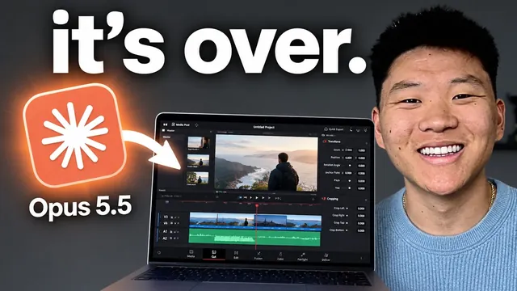

Opus 5.5가 영상 편집을 바꿔놨다 (무료 스킬 포함)

원본 영상 보기 →
- 정확한 지시보다 '원하는 감정'을 전달해도 됩니다
- 좋아하는 결과물을 분석시켜 스킬로 만드는 게 품질을 복제하는 방법이에요
- 검증 루프가 첫 결과물의 품질을 결정해요
한 줄 요약
Nate Herk가 Opus 5.5와 무료 도구 하이퍼프레임(HyperFrames)으로 자연어 프롬프트 하나만 써서 영상을 편집한 사례들을 보여 줍니다. 모션 그래픽, 사운드, B-roll까지 다 들어가요. 그리고 AI 영상 편집에서 늘 지키는 다섯 가지 원칙(받아쓰기, 불필요한 부분 잘라내기, 계획, 스킬, 검증 루프)을 정리합니다.
전체 내용 정리
Opus 5.5가 영상 편집 결과물이 가장 좋았어요
Nate는 오랫동안 Fable 5.1, GPT-6 Astra 같은 강력한 모델로 영상 편집을 실험해 왔습니다. 그중 Opus 5.5가 역대 가장 좋은 결과물을 냈다고 해요. 영상 도입부 예시도 프롬프트 하나로 만든 겁니다.
이 모델은 모션 디자인과 사운드 디자인은 물론이고, 필요하면 B-roll 영상을 가져오거나 스크린샷을 확보하고, 이미지와 영상을 직접 생성하기도 해요.
Nate가 꼽은 가장 큰 장점은 두 가지입니다. "감각(taste)"이 뛰어나다는 점, 그리고 검증 작업을 훌륭하게 해낸다는 점이요. 설정도 자연어만으로 됩니다.
하이퍼프레임 설정과 오프닝 프롬프트
오프닝 영상의 모션 그래픽은 전부 Claude Code 안에서 만들어졌어요. 쓴 도구는 무료인 하이퍼프레임인데, Claude Code에 넣으면 HTML을 작성해 애니메이션을 만들어 줍니다.
설정은 이렇게 해요. 구글에서 "hyperframes"를 검색해 GitHub 저장소 링크를 복사하고, Claude Code에 붙여넣으며 "영상 애니메이션을 만들 수 있게 하이퍼프레임을 설정해 줘"라고 말하면 끝입니다.
첫 단계는 영상 자막(transcript)을 만드는 거예요. 모션 그래픽이 정확한 타이밍에 나오게 하려면 필요하거든요. 사용량만큼 비용을 내는 ElevenLabs API가 조금 더 빠르고, 로컬 모델 Whisper는 무료지만 조금 느립니다.
프롬프트에서는 이 정도만 지시했어요. "Fable 5.1이나 GPT-6 Astra를 언급할 때 내가 가리키는 곳에 애니메이션이 나오게", "Claude 로고와 OpenAI 로고를 넣고, 읽기 쉽게 뒤에 리퀴드 글라스 카드 배경을 깔아 줘", "'best outputs ever'라고 말할 때 그 세 단어를 화면 하단에 강조해 줘", "B-roll·스크린샷·이미지·영상 생성을 말할 때는 화면 좌우에 자료를 띄워 줘".
그런데 모델은 요청하지 않은 미세한 줌인 효과를 넣어 몰입감을 높였고, 스크린샷을 찍어 확인하는 검증 과정까지 스스로 거쳤습니다.
마음에 드는 영상을 분석시켜 스킬로 만들어요
두 번째 예시는 유튜브를 주제로 한 짧은 쇼릴 영상이고, 역시 프롬프트 한 번으로 만들었습니다. 모델은 Nate의 썸네일 여러 개를 가져와서 재생 버튼을 들고 감사 인사를 하는 썸네일에 줌인하는 판단까지 했고, 사운드와 음악도 전부 생성했어요.
방법은 이렇습니다. X에서 Ken이 하이퍼프레임과 Opus로 만든 멋진 릴을 발견해 다운로드한 뒤, Claude Code에 업로드해 "이 영상이 왜 잘 만들어졌는지 분석하라"고 시켰어요.
핵심은 이겁니다. 원하는 걸 정확히 몰라도, 영상이 어떤 감정을 불러일으키길 원하는지는 알 수 있잖아요.
그다음 분석 결과를 스킬(skill)로 바꾸게 해서 '모션 쇼릴' 스킬이 생겼습니다. 이 스킬로 B-roll 이미지와 에셋을 수집하고 타이포그래피·색상·브랜딩 등 유튜브다운 요소가 느껴지는 쇼릴을 만들게 했어요. 이미지는 생성한 뒤 Kling으로 보내 영상으로 바꿨고, 다시 Claude로 가져와 Opus가 하나의 일관된 영상으로 합쳤습니다. 이 스킬은 Nate의 무료 스쿨 커뮤니티에 공유돼요.
스킬 없이 만든 회사 소개 영상, 그리고 105GB 벤치마크
스킬을 쓰지 않은 쇼릴도 보여 줍니다. "이력서용 쇼릴처럼 네가 얼마나 대단한 모션 디자이너인지 보여 주는 15초짜리 다이내믹한 모션 그래픽 영상을 만들어 줘"라고 요청한 결과물이에요.
X에서 누군가 공개한 프롬프트를 참고해서 "우리 회사 AIS에 관한 영상을 만들어 줘, 가능하면 실제 에셋과 로고를 쓰고, 필요한 에셋은 key.ai로 생성하고, 모션·음악·효과음은 하이퍼프레임 등을 써도 돼"라고도 시켰는데, 모델이 웹사이트에서 사진을 가져오고 회원 수까지 파악해 넣었습니다.
가장 좋아하는 벤치마크는 따로 있어요. Claude Code에 행사 'AIS 라이브'의 영상·녹화본·리소스 105GB 폴더 접근 권한을 주고 "이걸 다 살펴보고 이야기가 있는 홍보 영상을 만들어 줘"라고 한 사례입니다. 한 번의 프롬프트에 수정 한 번을 거친 결과예요(기술적으로는 프롬프트 3개를 쓴 V2.1입니다).
말이 어색하게 잘린 부분 등 완벽하지 않은 곳도 있었어요. 그래도 화면을 터널처럼 연결하고 참가자 반응 순간을 골라내고, 마지막에 AIS 라이브 로고와 빨간 점으로 줌인하며 "당신의 자리가 여기 있습니다"로 끝내는 연출은 인상적이었습니다. 중간에 Nate는 자신이 만드는 모든 웹사이트에 쓰는 웹사이트 디자인 스킬 '스크롤크래프트(ScrollCraft)'도 무료로 공유해요.
같은 영상을 세 가지 스타일로
활용 사례를 떠올리는 게 중요하다며, 아보카도 토스트 만드는 법을 찍은 단순한 영상으로 세 가지 편집본을 만들었습니다.
첫째, "아이에게 설명하듯" 화이트보드 손그림 스타일. 필요한 이미지와 영상은 key.ai로 만들고, 어떤 장면은 화이트보드가 화면 전체를, 어떤 장면은 왼쪽 절반만 차지하게 했어요.
둘째, 강좌 스타일. 카메라가 전체 화면에서 시작해 둥근 모양으로 잘리고, 미니멀한 배경에 큰 글머리 기호와 AI 생성 이미지, 가벼운 모션 그래픽을 넣었습니다. 영상 속 이미지와 영상은 모두 AI가 생성했고요.
셋째, 다른 스킬 없이 만든 숏폼. "필요한 소스를 생성하고, 흥미롭고 속도감 있게, 이해하기 쉽게"라고만 말했는데 여러 장면을 자연스럽게 전환하고 배경 B-roll로 주의를 붙잡았어요.
예제 대부분은 작업 강도(effort)를 '높음'으로 설정해 실행했습니다.
이어 룰루레몬 예시에서는 AI가 실제 제품과 모델 사진을 찾아 옷을 입고 뛰거나 점프하는 영상을 생성하고 카탈로그 이미지와 합쳤어요. 사람이 한 일은 원하는 분위기를 말해 준 것뿐입니다. 넘치는 에너지, 빠른 전개, 몰입감, 비트에 맞춘 음악과 효과음이요.
AI로 영상을 편집할 때 지키는 다섯 가지
첫째, 받아쓰기(transcription). 자막이 있어야 비트가 정확한 타이밍에 들어가고 AI가 이야기 구성을 이해해요. Whisper든 ElevenLabs든 필수입니다.
둘째, 불필요한 부분을 잘라내게 하기. 실수나 20초가량 소리가 없는 구간 등을 지우게 하면 편집기에서 일일이 찾는 것보다 훨씬 빨라요.
셋째, 핵심 내용을 계획하기. "이 시점에 이게 나오게 해 줘"처럼 원하는 결과와 좋은 결과물의 기준을 명확히 할수록 의도에 맞게 나옵니다.
넷째, 스킬 쓰기. 릴스를 많이 만든다면 릴스 스킬을 만들고, 실행할 때마다 "이건 좋았고 이건 별로였어"라고 피드백해 스킬을 업데이트하세요. 반복 작업이라면 그냥 스킬에 넣으면 됩니다.
다섯째, 검증 루프. 가장 중요해요. AI가 스크린샷을 찍어 확인하고 고치기를 반복하기 때문에, 사용자는 첫 결과물이 아니라 다섯 번째나 여섯 번째쯤 되는 결과물을 받습니다.
Nate는 이제 영상 편집 경험이 없어도 누구나 이 이점을 누릴 수 있으니, 편집이 발목을 잡게 두지 말라고 마무리해요.
핵심 인사이트
- 정확한 지시보다 '원하는 감정'을 전달해도 됩니다: 무엇을 원하는지 정확히 몰라도 영상이 불러일으킬 감정과 분위기를 말하면 모델이 스스로 줌인과 연출을 더해요. 비전문가가 편집을 맡길 때 진입 장벽이 크게 낮아집니다.
- 좋아하는 결과물을 분석시켜 스킬로 만드는 게 품질을 복제하는 방법이에요: 잘 만든 영상을 AI에게 분석시키고 그 이유를 스킬로 저장하면, 매번 같은 말을 반복하지 않고도 같은 수준의 결과물을 계속 뽑을 수 있고 피드백할수록 좋아집니다.
- 검증 루프가 첫 결과물의 품질을 결정해요: AI가 스크린샷으로 스스로 확인하고 수정하기를 반복하면 사용자는 초안이 아니라 여러 번 다듬어진 결과를 받습니다. 촬영만 하면 편집이 더 이상 병목이 되지 않는다는 주장의 근거예요.
오늘 당장 해볼 것
- 구글에서 "hyperframes"를 검색해 GitHub 저장소 링크를 복사하고, Claude Code에 붙여넣으며 "영상 애니메이션을 만들 수 있게 하이퍼프레임을 설정해 줘"라고 입력해 보세요.
- 가진 짧은 영상 하나를 Whisper나 ElevenLabs로 받아쓰기한 뒤, "실수와 소리 없는 구간을 잘라내고, 이 시점에 이 텍스트가 나오게 해 줘"처럼 구체적으로 지시해 편집본을 받아 보세요.
- 마음에 드는 릴이나 쇼츠 하나를 골라 "이 영상이 왜 잘 만들어졌는지 분석해서 스킬로 만들어 줘"라고 해보세요. 그 스킬로 내 브랜드 영상을 만들고 좋았던 점·아쉬운 점을 피드백하면 점점 좋아집니다.